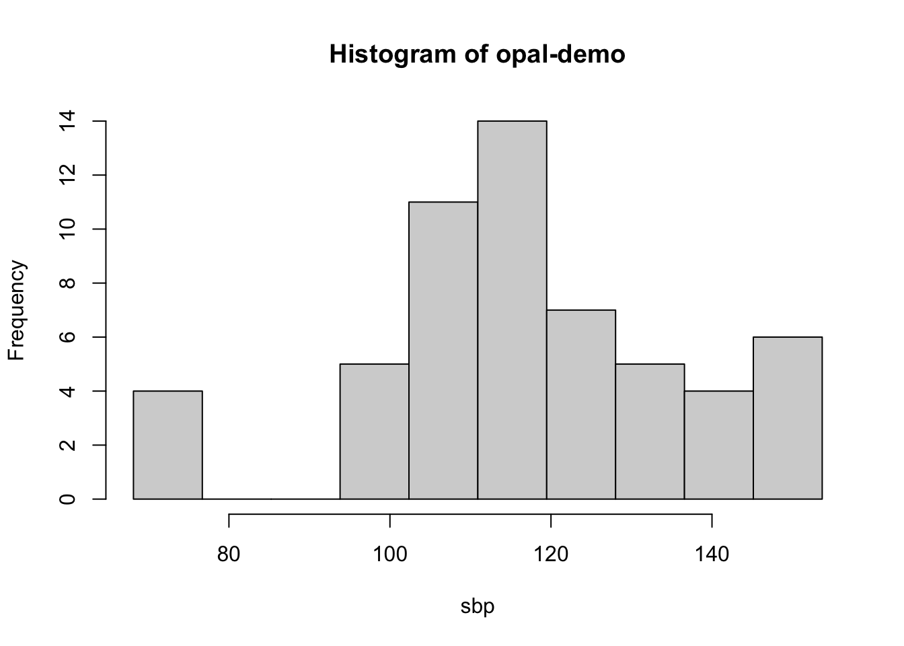

library(DSI)
library(DSOpal)
library(dsBaseClient)
library(dsOMOPClient)
library(dsOMOPHelper)
library(dsHelper)dsOMOP Workshop
In this lesson, we will learn how to:
- Set up the required dependencies and connect to a DataSHIELD server
- Create an interface object to interact with an OMOP database
- Explore the available data and identify the concepts of interest
- Retrieve data from the OMOP database using the interface object
- Explore the retrieved data and manipulate it using DataSHIELD functions
- Create cohort definitions using DataSHIELD functions to filter the data
- Perform a practical example of an analysis integrating the retrieved data into the DataSHIELD workflow
Recommended background knowledge
Before using dsOMOP, it is recommended to have a basic understanding of:
The OMOP CDM structure and its standardized clinical data format. You can learn more about OMOP CDM in the OHDSI Book chapter ‘The Common Data Model’.
OMOP Vocabularies and how they standardize medical concepts (like diagnoses, medications, procedures) across different coding systems (ICD-9, ICD-10, SNOMED CT, etc.) into a common representation. The OHDSI Book chapter ‘Standardized Vocabularies’ provides a comprehensive overview of this standardization process.
Basic DataSHIELD concepts and workflow. The DataSHIELD Beginner’s Tutorial is a good starting point.
For more information about the
dsOMOPframework, you can visit the dsOMOP website.
This knowledge will help you better understand how to effectively query and work with OMOP CDM data through the DataSHIELD infrastructure.
Initial setup
For this exercise, we will use the following libraries:
We will establish a connection to the demo Opal server. In order to use the OMOP packages and have access to the OMOP database resources, we need to specify the profile = "omop" parameter in the login builder:
builder <- newDSLoginBuilder()
builder$append(server="opal-demo",
url="https://opal-demo.obiba.org/",
user="dsuser",
password="P@ssw0rd",
driver = "OpalDriver",
profile = "omop")
logindata <- builder$build()
conns <- datashield.login(logins=logindata)Creating an OMOP database interface object
We will create an OMOP database interface object using the ds.omop.helper function. This interface object provides a set of methods for easily interacting with an OMOP database.
In our case, we will use the mimiciv resource inside the omop_demo project, which points to a small sample database formatted in OMOP CDM:
helper <- ds.omop.helper(
connections = conns,
resource = "omop_demo.mimiciv",
symbol = "mimiciv"
)This will create both the object helper which will assist us in the creation of our desired dataset, and parallely a table in the server side called mimiciv (since this is the name we specified in the symbol parameter) which will contain the data that we import from the OMOP database.
We can check the list of objects available in the server side using the ds.ls function:
ds.ls()$`opal-demo`
$`opal-demo`$environment.searched
[1] "R_GlobalEnv"
$`opal-demo`$objects.found
[1] "mimiciv"As we can observe, mimiciv has been successfully created in the server side. We can check the current state of the mimiciv table in the server side at any time using the ds.summary function:
ds.summary("mimiciv")$`opal-demo`
$`opal-demo`$class
[1] "data.frame"
$`opal-demo`$`number of rows`
[1] 100
$`opal-demo`$`number of columns`
[1] 5
$`opal-demo`$`variables held`
[1] "person_id" "gender_concept_id" "year_of_birth"
[4] "race_concept_id" "ethnicity_concept_id"The mimiciv table initially contains only the person table, as that is the nexus table in the OMOP CDM. This allows us to append data from other tables since all pieces of information are linked to the person table, since it is the table that contains the patient identifiers.
Now it is time to retrieve more data and add it to the mimiciv object using the helper interface object! But first, we need to explore our database to plan the data retrieval.
Data exploration
The first step is to identify the data that is available in the OMOP database. We can check the available tables using the tables method. The table structure should usually one that matches one version of the OMOP CDM (in our case, the mimiciv database is formatted in the OMOP CDM 5.4. This commonly provides a good starting point to understand the structure of our data:
helper$tables()$`opal-demo`
[1] "attribute_definition" "care_site" "cdm_source"
[4] "cohort" "cohort_attribute" "cohort_definition"
[7] "concept" "concept_relationship" "condition_era"
[10] "condition_occurrence" "cost" "death"
[13] "device_exposure" "dose_era" "drug_era"
[16] "drug_exposure" "fact_relationship" "location"
[19] "measurement" "metadata" "note"
[22] "note_nlp" "observation" "observation_period"
[25] "payer_plan_period" "person" "procedure_occurrence"
[28] "provider" "specimen" "visit_detail"
[31] "visit_occurrence" "vocabulary" As expected, the mimiciv database presents the structure of the OMOP CDM 5.4:

We can also check the columns available in each table using the columns method. These should match the columns available in the OMOP CDM documentation for the specific version of the CDM that the database is formatted in. This information is also available in the OMOP CDM documentation, but is a good reminder of the structure of the data.
Let’s check the columns available in the condition_occurrence, measurement and observation tables:
helper$columns("condition_occurrence")$`opal-demo`
$`opal-demo`$condition_occurrence
[1] "condition_occurrence_id" "person_id"
[3] "condition_concept_id" "condition_start_date"
[5] "condition_start_datetime" "condition_end_date"
[7] "condition_end_datetime" "condition_type_concept_id"
[9] "stop_reason" "provider_id"
[11] "visit_occurrence_id" "visit_detail_id"
[13] "condition_source_value" "condition_source_concept_id"
[15] "condition_status_source_value" "condition_status_concept_id" helper$columns("measurement")$`opal-demo`
$`opal-demo`$measurement
[1] "measurement_id" "person_id"
[3] "measurement_concept_id" "measurement_date"
[5] "measurement_datetime" "measurement_time"
[7] "measurement_type_concept_id" "operator_concept_id"
[9] "value_as_number" "value_as_concept_id"
[11] "unit_concept_id" "range_low"
[13] "range_high" "provider_id"
[15] "visit_occurrence_id" "visit_detail_id"
[17] "measurement_source_value" "measurement_source_concept_id"
[19] "unit_source_value" "value_source_value" helper$columns("observation")$`opal-demo`
$`opal-demo`$observation
[1] "observation_id" "person_id"
[3] "observation_concept_id" "observation_date"
[5] "observation_datetime" "observation_type_concept_id"
[7] "value_as_number" "value_as_string"
[9] "value_as_concept_id" "qualifier_concept_id"
[11] "unit_concept_id" "provider_id"
[13] "visit_occurrence_id" "visit_detail_id"
[15] "observation_source_value" "observation_source_concept_id"
[17] "unit_source_value" "qualifier_source_value" Now that we have a good understanding of the structure of the data we are working with, we should identify the concepts that we are interested in. Bear in mind that the OMOP CDM is designed to be used in a wide range of contexts, and therefore the concepts that are present in a database will be specific to the context of the database.
Concepts are the building blocks of the OMOP CDM. They are used to represent the entities that are present in the database, and are based on clinical vocabularies. For the sake of standardization, concepts are represented by numerical IDs matched to terms in clinical vocabularies. For example, the concept “Chronic obstructive lung disease” is stored as concept ID 255573 in the OMOP CDM, and it is represented by this identifier across the whole database.
We can explore the concepts available in the OMOP CDM through Athena, the central repository of standardized clinical vocabularies used in the OMOP CDM. Athena provides a web interface to search and browse concepts across different vocabularies and domains.
However, we can also use the concepts method to retrieve the concepts available in the database. This method will return a list of concept IDs present in a table, linked to the official concept name designed to it.
Let’s check the concepts available in the condition_occurrence, measurement and observation tables:
condition_list <- helper$concepts("condition_occurrence")
condition_list$`opal-demo`
concept_id concept_name
1 27674 Nausea and vomiting
2 29735 Candidiasis of mouth
3 31317 Dysphagia
4 73553 Arthropathy
5 75576 Irritable bowel syndrome
6 75860 Constipation
7 77670 Chest pain
8 78232 Shoulder joint pain
9 79864 Hematuria syndrome
10 80180 Osteoarthritis
11 80502 Osteoporosis
12 80951 Candidiasis of urogenital site
13 81611 Diverticular disease of colon
14 81902 Urinary tract infectious disease
15 132736 Bacteremia
16 132797 Sepsis
17 134736 Backache
18 134765 Cachexia
19 138384 Acquired hypothyroidism
20 140673 Hypothyroidism
21 192357 Paralytic ileus
22 192450 Retention of urine
23 192671 Gastrointestinal hemorrhage
24 192673 Vascular insufficiency of intestine
25 192680 Portal hypertension
26 193688 Clostridioides difficile infection
27 193782 End-stage renal disease
28 195306 Gastroduodenitis
29 195562 Hemorrhoids
30 195581 Peritoneal adhesion
31 196236 Septic shock
32 196463 Alcoholic cirrhosis
33 196523 Diarrhea
34 197320 Acute kidney injury
35 197444 Vascular complication of medical care
36 197494 Viral hepatitis C
37 197672 Urinary incontinence
38 197925 Hemorrhage of rectum and anus
39 197950 Cellulitis and abscess of trunk
40 198571 Cardiogenic shock
41 198678 Intestinal infectious disease
42 198964 Chronic hepatitis C
43 199074 Acute pancreatitis
44 200219 Abdominal pain
45 200451 Chronic passive congestion of liver
46 200528 Ascites
47 200618 Postoperative shock
48 201061 Diaphragmatic hernia
49 201826 Type 2 diabetes mellitus
50 254061 Pleural effusion
51 255573 Chronic obstructive lung disease
52 255848 Pneumonia
53 259992 Ventilator associated pneumonia
54 261600 Acute pulmonary edema
55 261880 Atelectasis
56 313217 Atrial fibrillation
57 314054 Aortic valve disorder
58 314665 Atrial flutter
59 314666 Old myocardial infarction
60 315078 Palpitations
61 315286 Chronic ischemic heart disease
62 315831 Chronic pulmonary heart disease
63 316135 Atrioventricular block
64 316139 Heart failure
65 317002 Low blood pressure
66 317003 Compression of vein
67 317009 Asthma
68 317576 Coronary arteriosclerosis
69 318736 Migraine
70 318772 Disorder of pericardium
71 318800 Gastroesophageal reflux disease
72 319041 Orthostatic hypotension
73 319049 Acute respiratory failure
74 319835 Congestive heart failure
75 319843 Mitral valve disorder
76 319844 Acute ischemic heart disease
77 320128 Essential hypertension
78 321052 Peripheral vascular disease
79 321462 Cardiac complication
80 321887 Disorder of artery
81 372448 Loss of consciousness
82 372887 Disorder of brain
83 372892 Metabolic encephalopathy
84 373764 Toxic encephalopathy
85 373995 Delirium
86 375519 Alcohol withdrawal
87 376690 Cerebral edema
88 376713 Cerebral hemorrhage
89 377091 Seizure
90 378253 Headache
91 380378 Epilepsy
92 432545 Bacterial infectious disease
93 432585 Blood coagulation disorder
94 432867 Hyperlipidemia
95 432870 Thrombocytopenic disorder
96 432875 Anemia due to chronic blood loss
97 432881 Pancytopenia
98 433163 Deficiency of macronutrients
99 433736 Obesity
100 433753 Alcohol abuse
101 433968 Candidiasis
102 434004 Hypervolemia
103 434056 Late effects of cerebrovascular disease
104 434547 Complication of surgical procedure
105 434610 Hyperkalemia
106 434814 Late effect of medical and surgical care complication
107 434894 Acute posthemorrhagic anemia
108 435243 Alcohol dependence
109 435515 Hypo-osmolality and or hyponatremia
110 435517 Acidosis
111 435788 Disorder of phosphorus metabolism
112 435796 Dehydration
113 435829 Rheumatic disease of heart valve
114 436073 Psychotic disorder
115 436096 Chronic pain
116 436222 Altered mental status
117 436238 Elevated level of transaminase and lactic acid dehydrogenase
118 436659 Iron deficiency anemia
119 436676 Posttraumatic stress disorder
120 436962 Insomnia
121 437233 Multiple myeloma
122 437247 Anemia of chronic disease
123 437264 Tobacco dependence syndrome
124 437312 Bleeding
125 437382 Urine finding
126 437390 Hypoxemia
127 437474 Postoperative infection
128 437579 Paroxysmal ventricular tachycardia
129 437663 Fever
130 437779 Streptococcal infectious disease
131 437827 Pure hypercholesterolemia
132 437833 Hypokalemia
133 438064 Bacterial infection due to Pseudomonas
134 438398 Leukocytosis
135 438725 Disorder of magnesium metabolism
136 438730 Alkalosis
137 439005 Chronic alcoholism in remission
138 439408 Graft complications
139 439696 Hypertensive heart and renal disease with (congestive) he...
140 439777 Anemia
141 440320 Infection due to Escherichia coli
142 440383 Depressive disorder
143 440424 Aphasia
144 440530 Oropharyngeal dysphagia
145 440674 Gout
146 440940 Methicillin resistant Staphylococcus aureus infection
147 441258 Anemia in neoplastic disease
148 441536 Mixed acid-base balance disorder
149 441829 Hyperosmolality and or hypernatremia
150 442019 Complication of procedure
151 442077 Anxiety disorder
152 442588 Obstructive sleep apnea syndrome
153 443211 Benign prostatic hyperplasia with outflow obstruction
154 443238 Diabetic - poor control
155 443344 Barrett's esophagus
156 443447 Iatrogenic hypotension
157 443530 Hematochezia
158 443597 Chronic kidney disease stage 3
159 443612 Chronic kidney disease stage 4
160 443734 Ketoacidosis due to type 2 diabetes mellitus
161 444044 Acute tubular necrosis
162 444070 Tachycardia
163 444100 Mood disorder
164 444101 Hypertensive heart failure
165 444406 Acute subendocardial infarction
166 764123 Atherosclerosis of coronary artery without angina pectoris
167 4008576 Diabetes mellitus without complication
168 4052648 Disability
169 4064161 Cirrhosis of liver
170 4064452 ECG: atrial fibrillation
171 4065288 EKG: atrial flutter
172 4079687 Tumor lysis syndrome
173 4088998 AV sequential pacing pattern
174 4089488 Atrial pacing pattern
175 4092038 Ventricular pacing pattern
176 4094822 Foreign body in respiratory tract
177 4101362 Finding of urine output
178 4126119 Toxic nephropathy
179 4138456 ECG: sinus bradycardia
180 4140598 ECG: sinus tachycardia
181 4141820 ECG: sinus arrhythmia
182 4144111 Gastroesophageal reflux disease without esophagitis
183 4145510 EKG: supraventricular tachycardia
184 4145513 ECG: sinus rhythm
185 4150981 Drug resistance
186 4154290 Paroxysmal atrial fibrillation
187 4175154 Disorder of the peripheral nervous system
188 4182210 Dementia
189 4187218 Pneumonitis due to inhaled substance
190 4188331 Chronic pulmonary edema
191 4193704 Type 2 diabetes mellitus without complication
192 4209423 Nicotine dependence
193 4229440 Chronic congestive heart failure
194 4232495 Primary cardiomyopathy
195 4233565 Severe protein-calorie malnutrition (Gomez: less than 60 ...
196 4245975 Hepatic failure
197 4256228 Respiratory failure
198 4268911 Disorientated
199 4270024 Acute non-ST segment elevation myocardial infarction
200 4282096 Major depression, single episode
201 4286201 Schizoaffective disorder
202 4295261 Postmenopausal state
203 4311499 Primary malignant neoplasm of respiratory tract
204 4322175 Late effect of complications of procedure
205 4332246 Aneurysm
206 4339214 Secondary pulmonary hypertension
207 4353709 Intracerebral vascular finding
208 36712779 Chronic total occlusion of coronary artery
209 36712821 Postprocedural infection
210 36712982 Unstable angina co-occurrent and due to coronary arterios...
211 37016114 Acute on chronic hypoxemic respiratory failure
212 37016349 Hyperglycemia due to type 2 diabetes mellitus
213 37017432 Polyneuropathy due to type 2 diabetes mellitus
214 37116361 Accidental wound during procedure
215 37311319 Hypovolemia
216 37394658 Severe sepsis
217 37395564 Hypoxemic respiratory failure
218 40321716 Secondary thrombocytopenia
219 40479192 Chronic systolic heart failure
220 40479576 Chronic diastolic heart failure
221 40480602 Acute on chronic systolic heart failure
222 40481043 Acute on chronic diastolic heart failure
223 40481762 Hemiplegia as late effect of cerebrovascular disease
224 40481919 Coronary atherosclerosis
225 40482801 Type II diabetes mellitus uncontrolled
226 40487064 Sepsis due to Escherichia coli
227 42537730 Coronary artery graft present
228 42537748 Acquired absence of organ
229 42873170 Dependence on supplemental oxygen
230 43022062 Cardiovascular system complication of procedure
231 43530681 Drug abuse in remission
232 43530690 Foot ulcer due to type 2 diabetes mellitus
233 43530742 Paralytic syndrome on one side of the body as late effect...
234 43531578 Chronic kidney disease due to type 2 diabetes mellitus
235 44782421 Acute deep venous thrombosis of upper extremity
236 44782429 Chronic kidney disease due to hypertension
237 44784217 Cardiac arrhythmia
238 44784439 Benign hypertensive renal disease with renal failure
239 44784631 Pain due to neoplastic disease
240 45757363 Hypoglycemia due to type 2 diabetes mellitus
241 45766207 Non-rheumatic mitral valve stenosis with regurgitation
242 45768812 Anemia in chronic kidney disease
243 45768910 Uncomplicated asthma
244 46271022 Chronic kidney disease
245 46271075 Acute hypoxemic respiratory failure
246 46273390 Dependence on respiratormeasurement_list <- helper$concepts("measurement")
measurement_list$`opal-demo`
concept_id concept_name
1 0 No matching concept
2 1175625 Breath rate spontaneous
3 3000067 Parathyrin.intact [Mass/volume] in Serum or Plasma
4 3000068 oxyCODONE [Presence] in Urine
5 3000099 Nuclear Ab [Units/volume] in Serum by Immunoassay
6 3000285 Sodium [Moles/volume] in Blood
7 3000330 Specific gravity of Urine by Test strip
8 3000348 Leukocyte esterase [Presence] in Urine by Test strip
9 3000456 Dacrocytes [Presence] in Blood by Light microscopy
10 3000461 Pressure support setting Ventilator
11 3000483 Glucose [Mass/volume] in Blood
12 3000593 Cobalamin (Vitamin B12) [Mass/volume] in Serum or Plasma
13 3000764 Benzodiazepines [Presence] in Urine
14 3000941 Linezolid [Susceptibility] by Disk diffusion (KB)
15 3000963 Hemoglobin [Mass/volume] in Blood
16 3001122 Ferritin [Mass/volume] in Serum or Plasma
17 3001308 Cholesterol in LDL [Moles/volume] in Serum or Plasma
18 3001318 Cholesterol.total/Cholesterol in HDL [Percentile]
19 3001494 Erythrocytes [#/volume] in Urine sediment by Microscopy h...
20 3001582 Protein/Creatinine [Mass Ratio] in Urine
21 3001893 Eosinophils/100 leukocytes in Pleural fluid
22 3001950 Amikacin [Susceptibility] by Disk diffusion (KB)
23 3002020 Barbiturates [Presence] in Urine
24 3002091 Choriogonadotropin [Moles/volume] in Serum or Plasma
25 3002113 Variant lymphocytes [Presence] in Blood by Light microscopy
26 3002179 Metamyelocytes/100 leukocytes in Blood
27 3002331 Protein [Mass/volume] in Peritoneal fluid
28 3002400 Iron [Mass/volume] in Serum or Plasma
29 3002827 Microalbumin/Creatinine [Mass Ratio] in 24 hour Urine
30 3002850 Tetracycline [Susceptibility] by Disk diffusion (KB)
31 3002888 Erythrocyte distribution width [Entitic volume]
32 3003105 Gentamicin [Susceptibility] by Disk diffusion (KB)
33 3003132 Barbiturates [Presence] in Serum, Plasma or Blood
34 3003181 Sodium [Moles/volume] in Urine
35 3003282 Leukocytes [#/volume] in Blood by Manual count
36 3003396 Base excess in Arterial blood by calculation
37 3003403 Glucose [Mass/volume] in Pleural fluid
38 3003434 Protein [Mass/volume] in Pleural fluid
39 3003709 Acetaminophen [Presence] in Serum or Plasma
40 3003785 Carcinoembryonic Ag [Mass/volume] in Serum or Plasma
41 3003906 Oxacillin [Susceptibility] by Disk diffusion (KB)
42 3004249 Systolic blood pressure
43 3004295 Urea nitrogen [Mass/volume] in Blood
44 3004297 Temperature Inhaled gas
45 3004327 Lymphocytes [#/volume] in Blood by Automated count
46 3004354 ceFAZolin [Susceptibility] by Disk diffusion (KB)
47 3004410 Hemoglobin A1c/Hemoglobin.total in Blood
48 3004501 Glucose [Mass/volume] in Serum or Plasma
49 3004588 Protein electrophoresis panel - Serum or Plasma
50 3004698 QRS duration in lead III
51 3004905 Lipase [Enzymatic activity/volume] in Serum or Plasma
52 3004921 Ventilation mode Ventilator
53 3005087 Macrophages/100 leukocytes in Body fluid by Manual count
54 3005131 Glucose mean value [Mass/volume] in Blood Estimated from ...
55 3005158 Clindamycin [Susceptibility] by Disk diffusion (KB)
56 3005309 Salicylates [Presence] in Serum or Plasma
57 3005456 Potassium [Moles/volume] in Blood
58 3005481 Spherocytes [Presence] in Blood by Light microscopy
59 3005555 Left ventricular Cardiac output
60 3005606 Pulmonary artery Systolic blood pressure
61 3005629 Inhaled oxygen flow rate
62 3005686 Bite cells [Presence] in Blood by Light microscopy
63 3005715 Vancomycin [Mass/volume] in Serum or Plasma
64 3005719 IgG [Mass/volume] in Serum or Plasma
65 3005854 Burr cells [Presence] in Blood by Light microscopy
66 3005897 Protein [Mass/volume] in Urine by Test strip
67 3006122 Meropenem [Susceptibility] by Disk diffusion (KB)
68 3006135 Nucleated erythrocytes [#/volume] in Blood by Manual count
69 3006175 Mucus [Presence] in Urine sediment by Light microscopy
70 3006490 Calcium oxalate crystals [Presence] in Urine sediment by ...
71 3006923 Alanine aminotransferase [Enzymatic activity/volume] in S...
72 3007070 Cholesterol in HDL [Mass/volume] in Serum or Plasma
73 3007124 Reticulocytes/100 erythrocytes in Blood by Automated count
74 3007164 IgA [Mass/volume] in Serum or Plasma
75 3007220 Creatine kinase [Enzymatic activity/volume] in Serum or P...
76 3007350 Amorphous sediment [Presence] in Urine sediment by Light ...
77 3007359 Bilirubin.indirect [Mass/volume] in Serum or Plasma
78 3007469 Breath rate setting Ventilator
79 3007733 Chloride [Moles/volume] in Urine
80 3007794 P-R Interval
81 3007876 Appearance of Urine
82 3007913 Alveolar-arterial oxygen Partial pressure difference
83 3008223 Glasgow coma score motor
84 3008251 Bicarbonate [Moles/volume] in Urine
85 3008295 Osmolality of Serum or Plasma
86 3008308 Erythromycin [Susceptibility] by Disk diffusion (KB)
87 3008449 S wave amplitude in lead III
88 3008504 Vancomycin [Susceptibility] by Disk diffusion (KB)
89 3008598 Thyroxine (T4) free [Mass/volume] in Serum or Plasma
90 3008691 Amylase [Enzymatic activity/volume] in Peritoneal fluid
91 3008855 Leukocytes other/100 leukocytes in Peritoneal fluid
92 3008939 Band form neutrophils [#/volume] in Blood by Manual count
93 3009094 Glasgow coma score verbal
94 3009201 Thyrotropin [Units/volume] in Serum or Plasma
95 3009306 Alpha-1-Fetoprotein [Mass/volume] in Serum or Plasma
96 3009314 Cefepime [Susceptibility] by Disk diffusion (KB)
97 3009497 Type of GI tube
98 3009542 Hematocrit [Volume Fraction] of Blood
99 3009613 Erythrocytes [#/volume] in Peritoneal fluid
100 3009682 Cortisol [Mass/volume] in Serum or Plasma
101 3009744 MCHC [Mass/volume] by Automated count
102 3010189 Epithelial cells [#/area] in Urine sediment by Microscopy...
103 3010321 Right eye Pupil diameter Manual
104 3010340 Triiodothyronine (T3) [Mass/volume] in Serum or Plasma
105 3010421 pH of Blood
106 3010834 Platelets [#/volume] in Blood by Manual count
107 3011335 Digoxin [Mass/volume] in Serum or Plasma
108 3011368 Poikilocytosis [Presence] in Blood by Light microscopy
109 3011397 Hemoglobin [Presence] in Urine by Test strip
110 3011483 Granular casts [#/area] in Urine sediment by Microscopy l...
111 3011544 Albumin [Mass/volume] in Pleural fluid
112 3011589 T wave amplitude in lead III
113 3011904 Phosphate [Mass/volume] in Serum or Plasma
114 3011965 Urea nitrogen [Mass/volume] in Urine
115 3011987 Polychromasia [Presence] in Blood by Light microscopy
116 3012030 MCH [Entitic mass] by Automated count
117 3012095 Magnesium [Moles/volume] in Serum or Plasma
118 3012222 Trimethoprim+Sulfamethoxazole [Susceptibility] by Disk di...
119 3012336 Haptoglobin [Mass/volume] in Serum or Plasma
120 3012410 Tidal volume setting Ventilator
121 3012501 Base excess in Blood by calculation
122 3012516 Albumin [Mass/volume] in Urine
123 3012888 Diastolic blood pressure
124 3012986 Erythrocytes [#/volume] in Cerebral spinal fluid by Autom...
125 3013290 Carbon dioxide [Partial pressure] in Blood
126 3013429 Basophils [#/volume] in Blood by Automated count
127 3013466 aPTT in Blood by Coagulation assay
128 3013502 Oxygen saturation in Blood
129 3013603 Prostate specific Ag [Mass/volume] in Serum or Plasma
130 3013650 Neutrophils [#/volume] in Blood by Automated count
131 3013678 Triglyceride [Mass/volume] in Serum or Plasma --12 hours ...
132 3013682 Urea nitrogen [Mass/volume] in Serum or Plasma
133 3013707 Erythrocyte sedimentation rate by Westergren method
134 3013721 Aspartate aminotransferase [Enzymatic activity/volume] in...
135 3013731 Hepatitis B virus surface Ab [Units/volume] in Serum or P...
136 3014080 Oxygen gas flow Oxygen delivery system
137 3014576 Chloride [Moles/volume] in Serum or Plasma
138 3014886 Neutrophils [#/volume] in Urine by Automated count
139 3015273 Consistency of Stool
140 3015280 Blasts [#/volume] in Blood by Manual count
141 3015377 Calcium [Moles/volume] in Serum or Plasma
142 3015536 ST amplitude.J point+80 ms Lead III
143 3015862 levoFLOXacin [Susceptibility] by Disk diffusion (KB)
144 3016038 Potassium [Moles/volume] in Urine
145 3016242 Piperacillin+Tazobactam [Susceptibility] by Disk diffusio...
146 3016251 Hemoglobin.gastrointestinal [Presence] in Stool
147 3016293 Bicarbonate [Moles/volume] in Serum or Plasma
148 3016311 Creatine kinase.MB/Creatine kinase.total in Serum or Plasma
149 3016335 Glasgow coma score eye opening
150 3016407 Fibrinogen [Mass/volume] in Platelet poor plasma by Coagu...
151 3016502 Oxygen saturation in Arterial blood
152 3016557 Hepatitis B virus core Ab [Units/volume] in Serum by Immu...
153 3016573 Ampicillin+Sulbactam [Susceptibility] by Disk diffusion (KB)
154 3016723 Creatinine [Mass/volume] in Serum or Plasma
155 3016750 Collection duration of Urine
156 3016771 Amylase [Enzymatic activity/volume] in Serum or Plasma
157 3016879 Cocaine [Presence] in Urine
158 3016991 Thyroxine (T4) [Mass/volume] in Serum or Plasma
159 3017143 Hepatitis C virus Ab [Presence] in Serum
160 3017181 Myelocytes/100 leukocytes in Blood
161 3017188 Pulmonary artery Diastolic blood pressure
162 3017250 Creatinine [Mass/volume] in Urine
163 3017400 Magnesium [Moles/volume] in Urine
164 3017594 Tidal volume.spontaneous --on ventilator
165 3017595 Ampicillin [Susceptibility] by Disk diffusion (KB)
166 3018053 S wave duration in lead III
167 3018405 Lactate [Moles/volume] in Arterial blood
168 3018465 Oxygen saturation in Mixed venous blood
169 3018572 Chloride [Moles/volume] in Blood
170 3018672 pH of Body fluid
171 3018760 Blood smear finding [Identifier] in Blood by Light micros...
172 3018834 Bilirubin.total [Presence] in Urine by Test strip
173 3018954 Choriogonadotropin (pregnancy test) [Presence] in Urine
174 3019298 Eosinophils/100 leukocytes in Peritoneal fluid
175 3019351 QRS terminal amplitude in lead III
176 3019416 Acanthocytes [Presence] in Blood by Light microscopy
177 3019473 Protein [Mass/volume] in Cerebral spinal fluid
178 3019510 Hepatitis B virus surface Ag [Presence] in Serum or Plasm...
179 3019550 Sodium [Moles/volume] in Serum or Plasma
180 3019634 Microscopic observation [Identifier] in Tissue by Wright ...
181 3019761 Pappenheimer bodies [Presence] in Blood by Light microscopy
182 3019800 Troponin T.cardiac [Mass/volume] in Serum or Plasma
183 3019880 Schistocytes [Presence] in Blood by Light microscopy
184 3019897 Erythrocyte distribution width [Ratio] by Automated count
185 3019977 pH of Arterial blood
186 3020149 25-hydroxyvitamin D3 [Mass/volume] in Serum or Plasma
187 3020153 Ciprofloxacin [Susceptibility] by Disk diffusion (KB)
188 3020416 Erythrocytes [#/volume] in Blood by Automated count
189 3020460 C reactive protein [Mass/volume] in Serum or Plasma
190 3020481 Respiration rhythm
191 3020630 Protein [Mass/volume] in Serum or Plasma
192 3020716 Inhaled oxygen concentration
193 3020891 Body temperature
194 3021044 Iron binding capacity [Mass/volume] in Serum or Plasma
195 3021119 Calcium.ionized [Moles/volume] in Blood
196 3021200 Thyroglobulin Ab [Units/volume] in Serum by Radioimmunoas...
197 3021303 Hypochromia [Presence] in Blood by Light microscopy
198 3021453 Eosinophils/100 leukocytes in Body fluid
199 3021502 Macrocytes [Presence] in Blood by Light microscopy
200 3021595 Phenytoin [Presence] in Serum or Plasma
201 3021601 Nitrite [Presence] in Urine by Test strip
202 3021886 Globulin [Mass/volume] in Serum
203 3022022 QRS duration
204 3022094 Tobramycin [Susceptibility] by Disk diffusion (KB)
205 3022217 INR in Platelet poor plasma by Coagulation assay
206 3022318 Heart rate rhythm
207 3022509 Hyaline casts [#/area] in Urine sediment by Microscopy lo...
208 3022548 Glucose [Mass/volume] in Cerebral spinal fluid
209 3022621 pH of Urine by Test strip
210 3022747 cefTRIAXone [Susceptibility] by Disk diffusion (KB)
211 3022797 R wave amplitude in lead III
212 3022875 Positive end expiratory pressure setting Ventilator
213 3023103 Potassium [Moles/volume] in Serum or Plasma
214 3023307 Penicillin G [Susceptibility] by Disk diffusion (KB)
215 3023314 Hematocrit [Volume Fraction] of Blood by Automated count
216 3023520 Reticulocytes [#/volume] in Blood
217 3023539 Ketones [Mass/volume] in Urine by Test strip
218 3023547 Leukocytes other/100 leukocytes in Body fluid
219 3023599 MCV [Entitic volume] by Automated count
220 3024128 Bilirubin.total [Mass/volume] in Serum or Plasma
221 3024153 Promyelocytes [#/volume] in Blood by Manual count
222 3024171 Respiratory rate
223 3024561 Albumin [Mass/volume] in Serum or Plasma
224 3024629 Glucose [Mass/volume] in Urine by Test strip
225 3024882 Oxygen/Total gas setting [Volume Fraction] Ventilator
226 3024929 Platelets [#/volume] in Blood by Automated count
227 3025019 Gas flow Respiratory system airway
228 3025255 Bacteria [#/area] in Urine sediment by Microscopy high po...
229 3025315 Body weight
230 3025439 Airway pressure Ventilator --at peak inspiratory flow max...
231 3025478 Tricyclic antidepressants [Presence] in Serum or Plasma
232 3025616 Target cells [Presence] in Blood by Light microscopy
233 3025809 Q-T interval
234 3026256 QRS initial amplitude in lead III
235 3026258 Q-T interval corrected
236 3026314 Anisocytosis [Presence] in Blood by Light microscopy
237 3026400 Ethanol [Presence] in Serum or Plasma
238 3026611 Left eye Pupil diameter Manual
239 3026692 Albumin [Mass/volume] in Peritoneal fluid
240 3026729 Phosphate [Mass/volume] in Urine
241 3026782 Osmolality of Urine
242 3026904 Basophilic stippling [Presence] in Blood by Light microscopy
243 3026910 Gamma glutamyl transferase [Enzymatic activity/volume] in...
244 3027008 Opiates [Presence] in Urine
245 3027018 Heart rate
246 3027114 Cholesterol [Mass/volume] in Serum or Plasma
247 3027162 Color of Urine
248 3027315 Oxygen [Partial pressure] in Blood
249 3027597 Bilirubin.direct [Mass/volume] in Serum or Plasma
250 3027598 Mean blood pressure
251 3027801 Oxygen [Partial pressure] in Arterial blood
252 3027920 Ovalocytes [Presence] in Blood by Light microscopy
253 3027944 Amphetamines [Presence] in Urine
254 3027946 Carbon dioxide [Partial pressure] in Arterial blood
255 3028026 IgM [Mass/volume] in Serum or Plasma
256 3028074 Pulmonary artery Mean blood pressure
257 3028308 Erythrocytes [#/volume] in Pleural fluid
258 3028437 Cholesterol in LDL [Mass/volume] in Serum or Plasma
259 3028468 Fragments [Presence] in Blood by Light microscopy
260 3028561 R wave duration in lead III
261 3028615 Eosinophils [#/volume] in Blood by Automated count
262 3028662 Hepatitis A virus Ab [Units/volume] in Serum or Plasma by...
263 3029187 Natriuretic peptide.B prohormone N-Terminal [Mass/volume]...
264 3031147 Carbon dioxide, total [Moles/volume] in Blood by calculation
265 3031951 Benzodiazepines [Presence] in Blood
266 3033364 Cholesterol [Mass/volume] in Pleural fluid
267 3033483 Monocytes/100 leukocytes in Peritoneal fluid
268 3033575 Monocytes [#/volume] in Blood by Automated count
269 3034426 Prothrombin time (PT)
270 3035206 Physical mobility Braden scale
271 3035359 ST amplitude.J point+60 ms Lead III
272 3035583 Leukocytes [#/area] in Urine sediment by Microscopy high ...
273 3035816 Nutrition intake pattern Braden scale
274 3035851 Transitional cells [#/area] in Urine sediment by Microsco...
275 3035995 Alkaline phosphatase [Enzymatic activity/volume] in Serum...
276 3036098 Sensory perception Braden scale
277 3036180 Methadone [Presence] in Urine
278 3036277 Body height
279 3036354 Leukocytes other [#/volume] in Blood by Manual count
280 3036518 Left ventricular Stroke volume
281 3036987 Folate [Mass/volume] in Serum or Plasma
282 3037022 Moisture exposure Braden scale
283 3037153 rifAMPin [Susceptibility] by Disk diffusion (KB)
284 3037185 Protein [Presence] in Urine
285 3037244 Yeast [#/area] in Urine sediment by Microscopy high power...
286 3037274 HIV 1 Ab [Units/volume] in Serum or Plasma by Immunoassay
287 3037278 Anion gap 4 in Serum or Plasma
288 3037318 Physical activity Braden scale
289 3037347 Friction and shear Braden scale
290 3037426 Urobilinogen [Presence] in Urine by Test strip
291 3037490 Color of Stool
292 3037556 Urate [Mass/volume] in Serum or Plasma
293 3037577 Monocytes/100 leukocytes in Cerebral spinal fluid
294 3037663 Carbon dioxide, total [Moles/volume] in Arterial blood by...
295 3037871 Macrophages/100 leukocytes in Cerebral spinal fluid by Ma...
296 3037885 Microcytes [Presence] in Blood by Light microscopy
297 3038047 Nitrofurantoin [Susceptibility] by Disk diffusion (KB)
298 3038086 cefTAZidime [Susceptibility] by Disk diffusion (KB)
299 3038104 Monocytes/100 leukocytes in Body fluid
300 3038288 Influenza virus B RNA [Presence] in Specimen by NAA with ...
301 3039000 Anion gap in Blood
302 3040168 Immature granulocytes [#/volume] in Blood
303 3041079 Nucleated cells [#/volume] in Pleural fluid by Automated ...
304 3041372 Nucleated cells [#/volume] in Cerebral spinal fluid by Au...
305 3041408 Nucleated cells [#/volume] in Peritoneal fluid by Automat...
306 3041635 Macrophages/100 leukocytes in Peritoneal fluid by Manual ...
307 3042347 Dressing for Wound
308 3043387 Monocytes/100 leukocytes in Pleural fluid
309 3043728 WBC casts [Presence] in Urine sediment by Light microscopy
310 3043970 Color of Skin
311 3044938 Influenza virus A RNA [Presence] in Specimen by NAA with ...
312 3046838 Edema site
313 3047181 Lactate [Moles/volume] in Blood
314 3051714 Fibrin D-dimer FEU [Mass/volume] in Platelet poor plasma
315 4024509 Urine culture
316 4024510 Microbial culture, body fluid
317 4035228 Respiratory microbial culture
318 4036044 Anaerobic microbial culture
319 4107893 Blood culture
320 4165398 Mycology culture
321 4189544 Microbial culture
322 4247906 Clostridium difficile assay
323 4265595 Creatine kinase measurement
324 4300293 Tissue culture
325 21490516 Inspiration [Time] Respiratory system
326 21490580 Carbon dioxide production (VCO2) in Respiratory system
327 21490650 Pressure max Respiratory system airway --during inspiration
328 21490675 Central venous pressure (CVP)
329 21490712 Left ventricular Cardiac index
330 21490753 Volume expired per minute Respiratory system
331 21490854 Tidal volume Ventilator --on ventilator
332 21490880 Left ventricular Stroke volume index
333 21490888 PCA lockout time Infusion pump
334 21490963 Right pupil Pupillary response
335 21491186 Endotracheal tube Diameter
336 21491763 Left pupil Pupillary response
337 21492239 Systolic blood pressure by Noninvasive
338 21492240 Diastolic blood pressure by Noninvasive
339 21492241 Mean blood pressure by Noninvasive
340 21492838 Skin integrity
341 21494965 Passing flatus
342 21494966 Physical findings of Abdomen by Palpation
343 36203862 Color of Sputum
344 36303946 Pressure.plateau Respiratory system airway --on ventilator
345 36684829 Richmond Agitation-Sedation Scale
346 40760766 Tidal volume.inspired maximum setting Ventilator alarm
347 40762499 Oxygen saturation in Arterial blood by Pulse oximetry
348 40762903 Apnea interval Ventilator alarm
349 40763080 Lactate dehydrogenase [Enzymatic activity/volume] in Peri...
350 42527086 Mean airway pressure
351 42527140 Total PEEP Respiratory system
352 43055270 Wound closure type
353 46236952 Glomerular filtration rate/1.73 sq M.predicted [Volume Ra...observation_list <- helper$concepts("observation")
observation_list$`opal-demo`
concept_id concept_name
1 432789 Opioid analgesic adverse reaction
2 433942 Accident while engaged in household activity
3 435928 Abnormal weight loss
4 436583 Fall
5 438046 Medical accident to patient during surgical and medical care
6 439996 Anticoagulant adverse reaction
7 440279 Accident
8 440922 Diabetic on insulin
9 440927 High risk drug monitoring status
10 441207 Adverse reaction to drug
11 441749 Fall on or from stairs or steps
12 2617452 Hospital observation service, per hour
13 3001062 History of Past illness
14 3007397 Ventilator type
15 3012697 History of Tobacco use
16 3024265 Body temperature measurement site
17 3034263 Pain severity - Reported
18 3039006 Oral care given
19 4005823 Tobacco user
20 4014023 Palliative care
21 4019967 Dependence on renal dialysis
22 4036936 Oxygen delivery
23 4060705 Body mass index 25-29 - overweight
24 4060985 Body mass index 30+ - obesity
25 4119499 Not for resuscitation
26 4127294 Resuscitation status
27 4135421 Body mass index 20-24 - normal
28 4138763 Acceptable pain level status
29 4139934 Homeless
30 4140830 Fall on same level
31 4143274 History of cerebrovascular disease
32 4148407 FH: Cardiovascular disease
33 4162219 Patient transfer to postoperative anesthesia care unit
34 4167217 Family history of clinical finding
35 4179242 History of malignant neoplasm of skin
36 4180749 History of malignant neoplasm of prostate
37 4182335 Family history of ischemic heart disease
38 4192791 Pain management (specialty)
39 4203722 Patient encounter procedure
40 4214956 History of clinical finding in subject
41 4215685 Past history of procedure
42 4233464 Legal physical restraint performed
43 4256640 Body mass index 40+ - severely obese
44 4265599 Patient transfer to intensive care unit
45 4276526 Cigarette smoker
46 4279614 Asphyxiation
47 4296248 Cost containment
48 4311079 Place of occurrence of accident or poisoning, hospital
49 4314870 Place of occurrence of accident or poisoning
50 4323345 History of fall
51 4324190 History of malignant neoplasm of breast
52 4337265 Bowel sounds
53 21492835 Respiratory effort
54 36717001 Long-term current use of aspirin
55 37116693 Stroke volume variation
56 40479553 Cardiac pacemaker in situ
57 40757693 Indicators of pain or possible pain
58 40758030 Preferred language
59 40766231 Marital status [NHANES]
60 46235654 Primary insurance
61 46272450 Long-term current use of drug therapy
62 46272451 Long-term current use of insulin
63 46272666 Coordination of family conference
64 46273928 Liaising with family
65 46273937 Long-term current use of anticoagulant
66 46274064 History of antineoplastic chemotherapyThese serve as concept catalogs for each table. We can explore them to identify the concepts that are present in the database.
For example, as an exercise, let’s find the concept IDs for:
- Systolic blood pressure
- Marital status
Note: For convenience, we can save these concept catalogs as files for easy reference, sharing with collaborators, and future consultation. For example, we can save them as CSV files:
# Create a data directory if it doesn't exist
dir.create("data", showWarnings = FALSE)
# Save the concept catalogs as CSV files
write.csv(condition_list, file = "data/condition_list.csv")
write.csv(measurement_list, file = "data/measurement_list.csv")
write.csv(observation_list, file = "data/observation_list.csv")Did you find the concepts that we are looking for?
Click to see the solution
Let’s search for these concepts in our catalogs:
- Systolic blood pressure: 3004249
- Found in Measurement
- Concept name: Systolic blood pressure
- Marital status: 40766231
- Found in Observation
- Concept name: Marital status [NHANES]
Data retrieval
We have identified the concepts that we are interested in. Now it is time to retrieve data from the OMOP database.
Bear in mind that we do not usually want to retrieve all the columns related to a concept. You should check the columns of the condition_occurrence, measurement and observation tables to identify the columns that are relevant to our analysis.
For example, let’s say that we want to obtain the numerical value of the systolic blood pressure. We can check again the columns available in the measurement table:
helper$columns("measurement")$`opal-demo`
$`opal-demo`$measurement
[1] "measurement_id" "person_id"
[3] "measurement_concept_id" "measurement_date"
[5] "measurement_datetime" "measurement_time"
[7] "measurement_type_concept_id" "operator_concept_id"
[9] "value_as_number" "value_as_concept_id"
[11] "unit_concept_id" "range_low"
[13] "range_high" "provider_id"
[15] "visit_occurrence_id" "visit_detail_id"
[17] "measurement_source_value" "measurement_source_concept_id"
[19] "unit_source_value" "value_source_value" We can see that the measurement table contains the value_as_number column, which contains the numerical value of the measurement.
This means that we want to:
- From the
measurementtable, - get the systolic blood pressure (whose concept ID is
3004249), - taking only the
value_as_numbercolumn
We can retrieve this data using the auto method of the helper interface object. This method automates the process of retrieving the data from the database and storing it in the mimiciv table:
helper$auto(
table = "measurement",
concepts = 3004249,
columns = "value_as_number"
)The data should have been stored in the mimiciv table. dsOMOP automatically translantes the concept IDs to their designated textual names for readability. This means that the column name will be the concept name, followed by the column name of the table (systolic_blood_pressure.value_as_number). We can check the current state of the mimiciv table in the server side at any time using the ds.summary function:
ds.summary("mimiciv")$`opal-demo`
$`opal-demo`$class
[1] "data.frame"
$`opal-demo`$`number of rows`
[1] 100
$`opal-demo`$`number of columns`
[1] 6
$`opal-demo`$`variables held`
[1] "person_id"
[2] "gender_concept_id"
[3] "year_of_birth"
[4] "race_concept_id"
[5] "ethnicity_concept_id"
[6] "systolic_blood_pressure.value_as_number"As we can see, the mimiciv table now contains the systolic_blood_pressure.value_as_number column, which contains the numerical value of the systolic blood pressure. Let’s check a summary of this data:
ds.summary("mimiciv$systolic_blood_pressure.value_as_number")$`opal-demo`
$`opal-demo`$class
[1] "numeric"
$`opal-demo`$length
[1] 100
$`opal-demo`$`quantiles & mean`
5% 10% 25% 50% 75% 90% 95% Mean
76.0000 94.4000 106.2500 116.5000 128.2500 143.9000 146.1500 116.0172 Let’s now use the renameVars from the dsHelper package, which we have seen before, to rename the variable to sbp for convenience:
dh.renameVars(
df = "mimiciv",
current_names = c("systolic_blood_pressure.value_as_number"),
new_names = c("sbp"))Let’s check whether the changes have been applied by listing the columns of the mimiciv table:
ds.colnames("mimiciv")$`opal-demo`
[1] "person_id" "gender_concept_id" "year_of_birth"
[4] "race_concept_id" "ethnicity_concept_id" "sbp" From this point, the data we have incorporated into the mimiciv table is ready to be used in our analysis as any other dataframe in DataSHIELD. To illustrate this, let’s perform a ds.histogram to visualize the distribution of the systolic blood pressure:
ds.histogram("mimiciv$sbp")
$breaks
[1] 68.13968 76.69465 85.24963 93.80460 102.35958 110.91455 119.46952
[8] 128.02450 136.57947 145.13445 153.68942
$counts
[1] 4 0 0 5 11 14 7 5 4 6
$density
[1] 0.008061452 0.000000000 0.000000000 0.010076815 0.022168993 0.028215082
[7] 0.014107541 0.010076815 0.008061452 0.012092178
$mids
[1] 72.41716 80.97214 89.52711 98.08209 106.63706 115.19204 123.74701
[8] 132.30199 140.85696 149.41194
$xname
[1] "xvect"
$equidist
[1] TRUE
attr(,"class")
[1] "histogram"Let’s now retrieve the data for the concept Marital status [NHANES]. Let’s start by checking the columns available in the observation table:
helper$columns("observation")$`opal-demo`
$`opal-demo`$observation
[1] "observation_id" "person_id"
[3] "observation_concept_id" "observation_date"
[5] "observation_datetime" "observation_type_concept_id"
[7] "value_as_number" "value_as_string"
[9] "value_as_concept_id" "qualifier_concept_id"
[11] "unit_concept_id" "provider_id"
[13] "visit_occurrence_id" "visit_detail_id"
[15] "observation_source_value" "observation_source_concept_id"
[17] "unit_source_value" "qualifier_source_value" In this case, the observation table contains the value_as_concept_id column, which contains the concept ID of the observation value (which will be translated to the textual concept name by dsOMOP).
Let’s use the auto method to retrieve it:
- From the
observationtable, - get the marital status (whose concept ID is
40766231), - taking only the
value_as_concept_idcolumn
helper$auto(
table = "observation",
concepts = 40766231,
columns = "value_as_concept_id"
)We should now have the marital_status_nhanes.value_as_concept_id column in the mimiciv table. Let’s check the current state of the mimiciv table in the server side at any time using the ds.summary function:
ds.summary("mimiciv")$`opal-demo`
$`opal-demo`$class
[1] "data.frame"
$`opal-demo`$`number of rows`
[1] 100
$`opal-demo`$`number of columns`
[1] 7
$`opal-demo`$`variables held`
[1] "person_id"
[2] "gender_concept_id"
[3] "year_of_birth"
[4] "race_concept_id"
[5] "ethnicity_concept_id"
[6] "sbp"
[7] "marital_status_nhanes.value_as_concept_id"The mimiciv table now contains the marital_status_nhanes.value_as_concept_id column. Let’s see a summary of this data:
ds.summary("mimiciv$marital_status_nhanes.value_as_concept_id")$`opal-demo`
$`opal-demo`$class
[1] "factor"
$`opal-demo`$length
[1] 100
$`opal-demo`$categories
[1] "divorced" "married" "never_married" "widowed"
$`opal-demo`$`count of 'divorced'`
[1] 10
$`opal-demo`$`count of 'married'`
[1] 36
$`opal-demo`$`count of 'never_married'`
[1] 30
$`opal-demo`$`count of 'widowed'`
[1] 12As we can observe, the marital_status_nhanes.value_as_concept_id column contains the following categories:
divorcedmarriednever marriedwidowed
Those were originally numerical concept IDs in the database, but dsOMOP automatically translated them to their textual names.
Subsetting data
Another fundamental operation in the dataset construction process that may be required for specific research contexts is subsetting. It is used to filter tables based on specific criteria, such as gender, age, conditions, measurements, observations or other characteristics. This operation can be used to determine a specific cohort of individuals, since all the data that is going to be retrieved from the database from that point will be related to the remaining individuals in the person table.
Let’s see with a simple example how we can filter, using the subset operation, a dataset to only include women patients. But first, where do we find the gender data?
Click to see the solution
The gender data is part of the person table under the gender_concept_id column, which was automatically retrieved when we created the helper interface object. This means that it is already available in the mimiciv table under mimiciv$gender_concept_id.
Let’s first check that this variable is indeed available in the mimiciv table:
ds.colnames("mimiciv")$`opal-demo`
[1] "person_id"
[2] "gender_concept_id"
[3] "year_of_birth"
[4] "race_concept_id"
[5] "ethnicity_concept_id"
[6] "sbp"
[7] "marital_status_nhanes.value_as_concept_id"Let’s also check a summary of this variable:
ds.summary("mimiciv$gender_concept_id")$`opal-demo`
$`opal-demo`$class
[1] "factor"
$`opal-demo`$length
[1] 100
$`opal-demo`$categories
[1] "female" "male"
$`opal-demo`$`count of 'female'`
[1] 43
$`opal-demo`$`count of 'male'`
[1] 57As we can observe, the gender_concept_id column contains the following categories:
femalemale
Those were also numerical concept IDs in the database that were matched to their corresponding concept names by dsOMOP.
Let’s start by renaming the gender_concept_id column to gender for convenience:
dh.renameVars(
df = "mimiciv",
current_names = c("gender_concept_id"),
new_names = c("gender"))From this point on, all the data is already in the DataSHIELD environment, so we will use DataSHIELD’s standard methods to perform the filtering.
In DataSHIELD, we first need to create a filter object in the server side that contains the value we want to filter by. Let’s create a gender_filter object that contains the value "female":
ds.make(newobj = "gender_filter", toAssign = "c('female')")$is.object.created
[1] "A data object <gender_filter> has been created in all specified data sources"
$validity.check
[1] "<gender_filter> appears valid in all sources"Now we can use the ds.dataFrameSubset function to filter the mimiciv table to only include female patients by passing the gender_filter object as a parameter with the Boolean.operator parameter set to "==":
ds.dataFrameSubset(
df.name = "mimiciv",
V1.name = "mimiciv$gender",
V2.name = "gender_filter",
Boolean.operator = "==",
newobj = "mimiciv",
datasources = conns,
notify.of.progress = FALSE
)$is.object.created
[1] "A data object <mimiciv> has been created in all specified data sources"
$validity.check
[1] "<mimiciv> appears valid in all sources"This will override the mimiciv table in the server side, which will now be the same table but only containing the female patients. Let’s check if this is the case:
ds.summary("mimiciv$gender")$`opal-demo`
$`opal-demo`$class
[1] "factor"
$`opal-demo`$length
[1] 43
$`opal-demo`$categories
[1] "female" "male"
$`opal-demo`$`count of 'female'`
[1] 43
$`opal-demo`$`count of 'male'`
[1] 0As we can see, the mimiciv table contains only female patients now. If we were to retrieve any other data from the database with the auto method, it would only be related to the female patients from this point on.
More advanced operations
Let’s now perform a more advanced operation. We want to study the relationship between chronic obstructive pulmonary disease (COPD) and two key biomarkers: tobacco use and asthma, so we will perform a generalized linear model (GLM) to estimate the odds ratio (OR) of COPD for each biomarker.
We start by creating a new helper interface object where we will retrieve the specified data. Since we are not going to use the helper object and the mimiciv table from the previous section anymore, we will create new objects with the same name:
helper <- ds.omop.helper(
connections = conns,
resource = "omop_demo.mimiciv",
symbol = "mimiciv"
)As we can see, the mimiciv table now only contains the initial person table again:
ds.summary("mimiciv")$`opal-demo`
$`opal-demo`$class
[1] "data.frame"
$`opal-demo`$`number of rows`
[1] 100
$`opal-demo`$`number of columns`
[1] 5
$`opal-demo`$`variables held`
[1] "person_id" "gender_concept_id" "year_of_birth"
[4] "race_concept_id" "ethnicity_concept_id"And we have restored all the patients that were in the mimiciv table from the previous section, not just the female patients:
ds.summary("mimiciv$gender_concept_id")$`opal-demo`
$`opal-demo`$class
[1] "factor"
$`opal-demo`$length
[1] 100
$`opal-demo`$categories
[1] "female" "male"
$`opal-demo`$`count of 'female'`
[1] 43
$`opal-demo`$`count of 'male'`
[1] 57We can now use the concept catalogs that we retrieved earlier to identify the concept IDs for COPD, tobacco use and asthma:
condition_list$`opal-demo`
concept_id concept_name
1 27674 Nausea and vomiting
2 29735 Candidiasis of mouth
3 31317 Dysphagia
4 73553 Arthropathy
5 75576 Irritable bowel syndrome
6 75860 Constipation
7 77670 Chest pain
8 78232 Shoulder joint pain
9 79864 Hematuria syndrome
10 80180 Osteoarthritis
11 80502 Osteoporosis
12 80951 Candidiasis of urogenital site
13 81611 Diverticular disease of colon
14 81902 Urinary tract infectious disease
15 132736 Bacteremia
16 132797 Sepsis
17 134736 Backache
18 134765 Cachexia
19 138384 Acquired hypothyroidism
20 140673 Hypothyroidism
21 192357 Paralytic ileus
22 192450 Retention of urine
23 192671 Gastrointestinal hemorrhage
24 192673 Vascular insufficiency of intestine
25 192680 Portal hypertension
26 193688 Clostridioides difficile infection
27 193782 End-stage renal disease
28 195306 Gastroduodenitis
29 195562 Hemorrhoids
30 195581 Peritoneal adhesion
31 196236 Septic shock
32 196463 Alcoholic cirrhosis
33 196523 Diarrhea
34 197320 Acute kidney injury
35 197444 Vascular complication of medical care
36 197494 Viral hepatitis C
37 197672 Urinary incontinence
38 197925 Hemorrhage of rectum and anus
39 197950 Cellulitis and abscess of trunk
40 198571 Cardiogenic shock
41 198678 Intestinal infectious disease
42 198964 Chronic hepatitis C
43 199074 Acute pancreatitis
44 200219 Abdominal pain
45 200451 Chronic passive congestion of liver
46 200528 Ascites
47 200618 Postoperative shock
48 201061 Diaphragmatic hernia
49 201826 Type 2 diabetes mellitus
50 254061 Pleural effusion
51 255573 Chronic obstructive lung disease
52 255848 Pneumonia
53 259992 Ventilator associated pneumonia
54 261600 Acute pulmonary edema
55 261880 Atelectasis
56 313217 Atrial fibrillation
57 314054 Aortic valve disorder
58 314665 Atrial flutter
59 314666 Old myocardial infarction
60 315078 Palpitations
61 315286 Chronic ischemic heart disease
62 315831 Chronic pulmonary heart disease
63 316135 Atrioventricular block
64 316139 Heart failure
65 317002 Low blood pressure
66 317003 Compression of vein
67 317009 Asthma
68 317576 Coronary arteriosclerosis
69 318736 Migraine
70 318772 Disorder of pericardium
71 318800 Gastroesophageal reflux disease
72 319041 Orthostatic hypotension
73 319049 Acute respiratory failure
74 319835 Congestive heart failure
75 319843 Mitral valve disorder
76 319844 Acute ischemic heart disease
77 320128 Essential hypertension
78 321052 Peripheral vascular disease
79 321462 Cardiac complication
80 321887 Disorder of artery
81 372448 Loss of consciousness
82 372887 Disorder of brain
83 372892 Metabolic encephalopathy
84 373764 Toxic encephalopathy
85 373995 Delirium
86 375519 Alcohol withdrawal
87 376690 Cerebral edema
88 376713 Cerebral hemorrhage
89 377091 Seizure
90 378253 Headache
91 380378 Epilepsy
92 432545 Bacterial infectious disease
93 432585 Blood coagulation disorder
94 432867 Hyperlipidemia
95 432870 Thrombocytopenic disorder
96 432875 Anemia due to chronic blood loss
97 432881 Pancytopenia
98 433163 Deficiency of macronutrients
99 433736 Obesity
100 433753 Alcohol abuse
101 433968 Candidiasis
102 434004 Hypervolemia
103 434056 Late effects of cerebrovascular disease
104 434547 Complication of surgical procedure
105 434610 Hyperkalemia
106 434814 Late effect of medical and surgical care complication
107 434894 Acute posthemorrhagic anemia
108 435243 Alcohol dependence
109 435515 Hypo-osmolality and or hyponatremia
110 435517 Acidosis
111 435788 Disorder of phosphorus metabolism
112 435796 Dehydration
113 435829 Rheumatic disease of heart valve
114 436073 Psychotic disorder
115 436096 Chronic pain
116 436222 Altered mental status
117 436238 Elevated level of transaminase and lactic acid dehydrogenase
118 436659 Iron deficiency anemia
119 436676 Posttraumatic stress disorder
120 436962 Insomnia
121 437233 Multiple myeloma
122 437247 Anemia of chronic disease
123 437264 Tobacco dependence syndrome
124 437312 Bleeding
125 437382 Urine finding
126 437390 Hypoxemia
127 437474 Postoperative infection
128 437579 Paroxysmal ventricular tachycardia
129 437663 Fever
130 437779 Streptococcal infectious disease
131 437827 Pure hypercholesterolemia
132 437833 Hypokalemia
133 438064 Bacterial infection due to Pseudomonas
134 438398 Leukocytosis
135 438725 Disorder of magnesium metabolism
136 438730 Alkalosis
137 439005 Chronic alcoholism in remission
138 439408 Graft complications
139 439696 Hypertensive heart and renal disease with (congestive) he...
140 439777 Anemia
141 440320 Infection due to Escherichia coli
142 440383 Depressive disorder
143 440424 Aphasia
144 440530 Oropharyngeal dysphagia
145 440674 Gout
146 440940 Methicillin resistant Staphylococcus aureus infection
147 441258 Anemia in neoplastic disease
148 441536 Mixed acid-base balance disorder
149 441829 Hyperosmolality and or hypernatremia
150 442019 Complication of procedure
151 442077 Anxiety disorder
152 442588 Obstructive sleep apnea syndrome
153 443211 Benign prostatic hyperplasia with outflow obstruction
154 443238 Diabetic - poor control
155 443344 Barrett's esophagus
156 443447 Iatrogenic hypotension
157 443530 Hematochezia
158 443597 Chronic kidney disease stage 3
159 443612 Chronic kidney disease stage 4
160 443734 Ketoacidosis due to type 2 diabetes mellitus
161 444044 Acute tubular necrosis
162 444070 Tachycardia
163 444100 Mood disorder
164 444101 Hypertensive heart failure
165 444406 Acute subendocardial infarction
166 764123 Atherosclerosis of coronary artery without angina pectoris
167 4008576 Diabetes mellitus without complication
168 4052648 Disability
169 4064161 Cirrhosis of liver
170 4064452 ECG: atrial fibrillation
171 4065288 EKG: atrial flutter
172 4079687 Tumor lysis syndrome
173 4088998 AV sequential pacing pattern
174 4089488 Atrial pacing pattern
175 4092038 Ventricular pacing pattern
176 4094822 Foreign body in respiratory tract
177 4101362 Finding of urine output
178 4126119 Toxic nephropathy
179 4138456 ECG: sinus bradycardia
180 4140598 ECG: sinus tachycardia
181 4141820 ECG: sinus arrhythmia
182 4144111 Gastroesophageal reflux disease without esophagitis
183 4145510 EKG: supraventricular tachycardia
184 4145513 ECG: sinus rhythm
185 4150981 Drug resistance
186 4154290 Paroxysmal atrial fibrillation
187 4175154 Disorder of the peripheral nervous system
188 4182210 Dementia
189 4187218 Pneumonitis due to inhaled substance
190 4188331 Chronic pulmonary edema
191 4193704 Type 2 diabetes mellitus without complication
192 4209423 Nicotine dependence
193 4229440 Chronic congestive heart failure
194 4232495 Primary cardiomyopathy
195 4233565 Severe protein-calorie malnutrition (Gomez: less than 60 ...
196 4245975 Hepatic failure
197 4256228 Respiratory failure
198 4268911 Disorientated
199 4270024 Acute non-ST segment elevation myocardial infarction
200 4282096 Major depression, single episode
201 4286201 Schizoaffective disorder
202 4295261 Postmenopausal state
203 4311499 Primary malignant neoplasm of respiratory tract
204 4322175 Late effect of complications of procedure
205 4332246 Aneurysm
206 4339214 Secondary pulmonary hypertension
207 4353709 Intracerebral vascular finding
208 36712779 Chronic total occlusion of coronary artery
209 36712821 Postprocedural infection
210 36712982 Unstable angina co-occurrent and due to coronary arterios...
211 37016114 Acute on chronic hypoxemic respiratory failure
212 37016349 Hyperglycemia due to type 2 diabetes mellitus
213 37017432 Polyneuropathy due to type 2 diabetes mellitus
214 37116361 Accidental wound during procedure
215 37311319 Hypovolemia
216 37394658 Severe sepsis
217 37395564 Hypoxemic respiratory failure
218 40321716 Secondary thrombocytopenia
219 40479192 Chronic systolic heart failure
220 40479576 Chronic diastolic heart failure
221 40480602 Acute on chronic systolic heart failure
222 40481043 Acute on chronic diastolic heart failure
223 40481762 Hemiplegia as late effect of cerebrovascular disease
224 40481919 Coronary atherosclerosis
225 40482801 Type II diabetes mellitus uncontrolled
226 40487064 Sepsis due to Escherichia coli
227 42537730 Coronary artery graft present
228 42537748 Acquired absence of organ
229 42873170 Dependence on supplemental oxygen
230 43022062 Cardiovascular system complication of procedure
231 43530681 Drug abuse in remission
232 43530690 Foot ulcer due to type 2 diabetes mellitus
233 43530742 Paralytic syndrome on one side of the body as late effect...
234 43531578 Chronic kidney disease due to type 2 diabetes mellitus
235 44782421 Acute deep venous thrombosis of upper extremity
236 44782429 Chronic kidney disease due to hypertension
237 44784217 Cardiac arrhythmia
238 44784439 Benign hypertensive renal disease with renal failure
239 44784631 Pain due to neoplastic disease
240 45757363 Hypoglycemia due to type 2 diabetes mellitus
241 45766207 Non-rheumatic mitral valve stenosis with regurgitation
242 45768812 Anemia in chronic kidney disease
243 45768910 Uncomplicated asthma
244 46271022 Chronic kidney disease
245 46271075 Acute hypoxemic respiratory failure
246 46273390 Dependence on respiratorobservation_list$`opal-demo`
concept_id concept_name
1 432789 Opioid analgesic adverse reaction
2 433942 Accident while engaged in household activity
3 435928 Abnormal weight loss
4 436583 Fall
5 438046 Medical accident to patient during surgical and medical care
6 439996 Anticoagulant adverse reaction
7 440279 Accident
8 440922 Diabetic on insulin
9 440927 High risk drug monitoring status
10 441207 Adverse reaction to drug
11 441749 Fall on or from stairs or steps
12 2617452 Hospital observation service, per hour
13 3001062 History of Past illness
14 3007397 Ventilator type
15 3012697 History of Tobacco use
16 3024265 Body temperature measurement site
17 3034263 Pain severity - Reported
18 3039006 Oral care given
19 4005823 Tobacco user
20 4014023 Palliative care
21 4019967 Dependence on renal dialysis
22 4036936 Oxygen delivery
23 4060705 Body mass index 25-29 - overweight
24 4060985 Body mass index 30+ - obesity
25 4119499 Not for resuscitation
26 4127294 Resuscitation status
27 4135421 Body mass index 20-24 - normal
28 4138763 Acceptable pain level status
29 4139934 Homeless
30 4140830 Fall on same level
31 4143274 History of cerebrovascular disease
32 4148407 FH: Cardiovascular disease
33 4162219 Patient transfer to postoperative anesthesia care unit
34 4167217 Family history of clinical finding
35 4179242 History of malignant neoplasm of skin
36 4180749 History of malignant neoplasm of prostate
37 4182335 Family history of ischemic heart disease
38 4192791 Pain management (specialty)
39 4203722 Patient encounter procedure
40 4214956 History of clinical finding in subject
41 4215685 Past history of procedure
42 4233464 Legal physical restraint performed
43 4256640 Body mass index 40+ - severely obese
44 4265599 Patient transfer to intensive care unit
45 4276526 Cigarette smoker
46 4279614 Asphyxiation
47 4296248 Cost containment
48 4311079 Place of occurrence of accident or poisoning, hospital
49 4314870 Place of occurrence of accident or poisoning
50 4323345 History of fall
51 4324190 History of malignant neoplasm of breast
52 4337265 Bowel sounds
53 21492835 Respiratory effort
54 36717001 Long-term current use of aspirin
55 37116693 Stroke volume variation
56 40479553 Cardiac pacemaker in situ
57 40757693 Indicators of pain or possible pain
58 40758030 Preferred language
59 40766231 Marital status [NHANES]
60 46235654 Primary insurance
61 46272450 Long-term current use of drug therapy
62 46272451 Long-term current use of insulin
63 46272666 Coordination of family conference
64 46273928 Liaising with family
65 46273937 Long-term current use of anticoagulant
66 46274064 History of antineoplastic chemotherapymeasurement_list$`opal-demo`
concept_id concept_name
1 0 No matching concept
2 1175625 Breath rate spontaneous
3 3000067 Parathyrin.intact [Mass/volume] in Serum or Plasma
4 3000068 oxyCODONE [Presence] in Urine
5 3000099 Nuclear Ab [Units/volume] in Serum by Immunoassay
6 3000285 Sodium [Moles/volume] in Blood
7 3000330 Specific gravity of Urine by Test strip
8 3000348 Leukocyte esterase [Presence] in Urine by Test strip
9 3000456 Dacrocytes [Presence] in Blood by Light microscopy
10 3000461 Pressure support setting Ventilator
11 3000483 Glucose [Mass/volume] in Blood
12 3000593 Cobalamin (Vitamin B12) [Mass/volume] in Serum or Plasma
13 3000764 Benzodiazepines [Presence] in Urine
14 3000941 Linezolid [Susceptibility] by Disk diffusion (KB)
15 3000963 Hemoglobin [Mass/volume] in Blood
16 3001122 Ferritin [Mass/volume] in Serum or Plasma
17 3001308 Cholesterol in LDL [Moles/volume] in Serum or Plasma
18 3001318 Cholesterol.total/Cholesterol in HDL [Percentile]
19 3001494 Erythrocytes [#/volume] in Urine sediment by Microscopy h...
20 3001582 Protein/Creatinine [Mass Ratio] in Urine
21 3001893 Eosinophils/100 leukocytes in Pleural fluid
22 3001950 Amikacin [Susceptibility] by Disk diffusion (KB)
23 3002020 Barbiturates [Presence] in Urine
24 3002091 Choriogonadotropin [Moles/volume] in Serum or Plasma
25 3002113 Variant lymphocytes [Presence] in Blood by Light microscopy
26 3002179 Metamyelocytes/100 leukocytes in Blood
27 3002331 Protein [Mass/volume] in Peritoneal fluid
28 3002400 Iron [Mass/volume] in Serum or Plasma
29 3002827 Microalbumin/Creatinine [Mass Ratio] in 24 hour Urine
30 3002850 Tetracycline [Susceptibility] by Disk diffusion (KB)
31 3002888 Erythrocyte distribution width [Entitic volume]
32 3003105 Gentamicin [Susceptibility] by Disk diffusion (KB)
33 3003132 Barbiturates [Presence] in Serum, Plasma or Blood
34 3003181 Sodium [Moles/volume] in Urine
35 3003282 Leukocytes [#/volume] in Blood by Manual count
36 3003396 Base excess in Arterial blood by calculation
37 3003403 Glucose [Mass/volume] in Pleural fluid
38 3003434 Protein [Mass/volume] in Pleural fluid
39 3003709 Acetaminophen [Presence] in Serum or Plasma
40 3003785 Carcinoembryonic Ag [Mass/volume] in Serum or Plasma
41 3003906 Oxacillin [Susceptibility] by Disk diffusion (KB)
42 3004249 Systolic blood pressure
43 3004295 Urea nitrogen [Mass/volume] in Blood
44 3004297 Temperature Inhaled gas
45 3004327 Lymphocytes [#/volume] in Blood by Automated count
46 3004354 ceFAZolin [Susceptibility] by Disk diffusion (KB)
47 3004410 Hemoglobin A1c/Hemoglobin.total in Blood
48 3004501 Glucose [Mass/volume] in Serum or Plasma
49 3004588 Protein electrophoresis panel - Serum or Plasma
50 3004698 QRS duration in lead III
51 3004905 Lipase [Enzymatic activity/volume] in Serum or Plasma
52 3004921 Ventilation mode Ventilator
53 3005087 Macrophages/100 leukocytes in Body fluid by Manual count
54 3005131 Glucose mean value [Mass/volume] in Blood Estimated from ...
55 3005158 Clindamycin [Susceptibility] by Disk diffusion (KB)
56 3005309 Salicylates [Presence] in Serum or Plasma
57 3005456 Potassium [Moles/volume] in Blood
58 3005481 Spherocytes [Presence] in Blood by Light microscopy
59 3005555 Left ventricular Cardiac output
60 3005606 Pulmonary artery Systolic blood pressure
61 3005629 Inhaled oxygen flow rate
62 3005686 Bite cells [Presence] in Blood by Light microscopy
63 3005715 Vancomycin [Mass/volume] in Serum or Plasma
64 3005719 IgG [Mass/volume] in Serum or Plasma
65 3005854 Burr cells [Presence] in Blood by Light microscopy
66 3005897 Protein [Mass/volume] in Urine by Test strip
67 3006122 Meropenem [Susceptibility] by Disk diffusion (KB)
68 3006135 Nucleated erythrocytes [#/volume] in Blood by Manual count
69 3006175 Mucus [Presence] in Urine sediment by Light microscopy
70 3006490 Calcium oxalate crystals [Presence] in Urine sediment by ...
71 3006923 Alanine aminotransferase [Enzymatic activity/volume] in S...
72 3007070 Cholesterol in HDL [Mass/volume] in Serum or Plasma
73 3007124 Reticulocytes/100 erythrocytes in Blood by Automated count
74 3007164 IgA [Mass/volume] in Serum or Plasma
75 3007220 Creatine kinase [Enzymatic activity/volume] in Serum or P...
76 3007350 Amorphous sediment [Presence] in Urine sediment by Light ...
77 3007359 Bilirubin.indirect [Mass/volume] in Serum or Plasma
78 3007469 Breath rate setting Ventilator
79 3007733 Chloride [Moles/volume] in Urine
80 3007794 P-R Interval
81 3007876 Appearance of Urine
82 3007913 Alveolar-arterial oxygen Partial pressure difference
83 3008223 Glasgow coma score motor
84 3008251 Bicarbonate [Moles/volume] in Urine
85 3008295 Osmolality of Serum or Plasma
86 3008308 Erythromycin [Susceptibility] by Disk diffusion (KB)
87 3008449 S wave amplitude in lead III
88 3008504 Vancomycin [Susceptibility] by Disk diffusion (KB)
89 3008598 Thyroxine (T4) free [Mass/volume] in Serum or Plasma
90 3008691 Amylase [Enzymatic activity/volume] in Peritoneal fluid
91 3008855 Leukocytes other/100 leukocytes in Peritoneal fluid
92 3008939 Band form neutrophils [#/volume] in Blood by Manual count
93 3009094 Glasgow coma score verbal
94 3009201 Thyrotropin [Units/volume] in Serum or Plasma
95 3009306 Alpha-1-Fetoprotein [Mass/volume] in Serum or Plasma
96 3009314 Cefepime [Susceptibility] by Disk diffusion (KB)
97 3009497 Type of GI tube
98 3009542 Hematocrit [Volume Fraction] of Blood
99 3009613 Erythrocytes [#/volume] in Peritoneal fluid
100 3009682 Cortisol [Mass/volume] in Serum or Plasma
101 3009744 MCHC [Mass/volume] by Automated count
102 3010189 Epithelial cells [#/area] in Urine sediment by Microscopy...
103 3010321 Right eye Pupil diameter Manual
104 3010340 Triiodothyronine (T3) [Mass/volume] in Serum or Plasma
105 3010421 pH of Blood
106 3010834 Platelets [#/volume] in Blood by Manual count
107 3011335 Digoxin [Mass/volume] in Serum or Plasma
108 3011368 Poikilocytosis [Presence] in Blood by Light microscopy
109 3011397 Hemoglobin [Presence] in Urine by Test strip
110 3011483 Granular casts [#/area] in Urine sediment by Microscopy l...
111 3011544 Albumin [Mass/volume] in Pleural fluid
112 3011589 T wave amplitude in lead III
113 3011904 Phosphate [Mass/volume] in Serum or Plasma
114 3011965 Urea nitrogen [Mass/volume] in Urine
115 3011987 Polychromasia [Presence] in Blood by Light microscopy
116 3012030 MCH [Entitic mass] by Automated count
117 3012095 Magnesium [Moles/volume] in Serum or Plasma
118 3012222 Trimethoprim+Sulfamethoxazole [Susceptibility] by Disk di...
119 3012336 Haptoglobin [Mass/volume] in Serum or Plasma
120 3012410 Tidal volume setting Ventilator
121 3012501 Base excess in Blood by calculation
122 3012516 Albumin [Mass/volume] in Urine
123 3012888 Diastolic blood pressure
124 3012986 Erythrocytes [#/volume] in Cerebral spinal fluid by Autom...
125 3013290 Carbon dioxide [Partial pressure] in Blood
126 3013429 Basophils [#/volume] in Blood by Automated count
127 3013466 aPTT in Blood by Coagulation assay
128 3013502 Oxygen saturation in Blood
129 3013603 Prostate specific Ag [Mass/volume] in Serum or Plasma
130 3013650 Neutrophils [#/volume] in Blood by Automated count
131 3013678 Triglyceride [Mass/volume] in Serum or Plasma --12 hours ...
132 3013682 Urea nitrogen [Mass/volume] in Serum or Plasma
133 3013707 Erythrocyte sedimentation rate by Westergren method
134 3013721 Aspartate aminotransferase [Enzymatic activity/volume] in...
135 3013731 Hepatitis B virus surface Ab [Units/volume] in Serum or P...
136 3014080 Oxygen gas flow Oxygen delivery system
137 3014576 Chloride [Moles/volume] in Serum or Plasma
138 3014886 Neutrophils [#/volume] in Urine by Automated count
139 3015273 Consistency of Stool
140 3015280 Blasts [#/volume] in Blood by Manual count
141 3015377 Calcium [Moles/volume] in Serum or Plasma
142 3015536 ST amplitude.J point+80 ms Lead III
143 3015862 levoFLOXacin [Susceptibility] by Disk diffusion (KB)
144 3016038 Potassium [Moles/volume] in Urine
145 3016242 Piperacillin+Tazobactam [Susceptibility] by Disk diffusio...
146 3016251 Hemoglobin.gastrointestinal [Presence] in Stool
147 3016293 Bicarbonate [Moles/volume] in Serum or Plasma
148 3016311 Creatine kinase.MB/Creatine kinase.total in Serum or Plasma
149 3016335 Glasgow coma score eye opening
150 3016407 Fibrinogen [Mass/volume] in Platelet poor plasma by Coagu...
151 3016502 Oxygen saturation in Arterial blood
152 3016557 Hepatitis B virus core Ab [Units/volume] in Serum by Immu...
153 3016573 Ampicillin+Sulbactam [Susceptibility] by Disk diffusion (KB)
154 3016723 Creatinine [Mass/volume] in Serum or Plasma
155 3016750 Collection duration of Urine
156 3016771 Amylase [Enzymatic activity/volume] in Serum or Plasma
157 3016879 Cocaine [Presence] in Urine
158 3016991 Thyroxine (T4) [Mass/volume] in Serum or Plasma
159 3017143 Hepatitis C virus Ab [Presence] in Serum
160 3017181 Myelocytes/100 leukocytes in Blood
161 3017188 Pulmonary artery Diastolic blood pressure
162 3017250 Creatinine [Mass/volume] in Urine
163 3017400 Magnesium [Moles/volume] in Urine
164 3017594 Tidal volume.spontaneous --on ventilator
165 3017595 Ampicillin [Susceptibility] by Disk diffusion (KB)
166 3018053 S wave duration in lead III
167 3018405 Lactate [Moles/volume] in Arterial blood
168 3018465 Oxygen saturation in Mixed venous blood
169 3018572 Chloride [Moles/volume] in Blood
170 3018672 pH of Body fluid
171 3018760 Blood smear finding [Identifier] in Blood by Light micros...
172 3018834 Bilirubin.total [Presence] in Urine by Test strip
173 3018954 Choriogonadotropin (pregnancy test) [Presence] in Urine
174 3019298 Eosinophils/100 leukocytes in Peritoneal fluid
175 3019351 QRS terminal amplitude in lead III
176 3019416 Acanthocytes [Presence] in Blood by Light microscopy
177 3019473 Protein [Mass/volume] in Cerebral spinal fluid
178 3019510 Hepatitis B virus surface Ag [Presence] in Serum or Plasm...
179 3019550 Sodium [Moles/volume] in Serum or Plasma
180 3019634 Microscopic observation [Identifier] in Tissue by Wright ...
181 3019761 Pappenheimer bodies [Presence] in Blood by Light microscopy
182 3019800 Troponin T.cardiac [Mass/volume] in Serum or Plasma
183 3019880 Schistocytes [Presence] in Blood by Light microscopy
184 3019897 Erythrocyte distribution width [Ratio] by Automated count
185 3019977 pH of Arterial blood
186 3020149 25-hydroxyvitamin D3 [Mass/volume] in Serum or Plasma
187 3020153 Ciprofloxacin [Susceptibility] by Disk diffusion (KB)
188 3020416 Erythrocytes [#/volume] in Blood by Automated count
189 3020460 C reactive protein [Mass/volume] in Serum or Plasma
190 3020481 Respiration rhythm
191 3020630 Protein [Mass/volume] in Serum or Plasma
192 3020716 Inhaled oxygen concentration
193 3020891 Body temperature
194 3021044 Iron binding capacity [Mass/volume] in Serum or Plasma
195 3021119 Calcium.ionized [Moles/volume] in Blood
196 3021200 Thyroglobulin Ab [Units/volume] in Serum by Radioimmunoas...
197 3021303 Hypochromia [Presence] in Blood by Light microscopy
198 3021453 Eosinophils/100 leukocytes in Body fluid
199 3021502 Macrocytes [Presence] in Blood by Light microscopy
200 3021595 Phenytoin [Presence] in Serum or Plasma
201 3021601 Nitrite [Presence] in Urine by Test strip
202 3021886 Globulin [Mass/volume] in Serum
203 3022022 QRS duration
204 3022094 Tobramycin [Susceptibility] by Disk diffusion (KB)
205 3022217 INR in Platelet poor plasma by Coagulation assay
206 3022318 Heart rate rhythm
207 3022509 Hyaline casts [#/area] in Urine sediment by Microscopy lo...
208 3022548 Glucose [Mass/volume] in Cerebral spinal fluid
209 3022621 pH of Urine by Test strip
210 3022747 cefTRIAXone [Susceptibility] by Disk diffusion (KB)
211 3022797 R wave amplitude in lead III
212 3022875 Positive end expiratory pressure setting Ventilator
213 3023103 Potassium [Moles/volume] in Serum or Plasma
214 3023307 Penicillin G [Susceptibility] by Disk diffusion (KB)
215 3023314 Hematocrit [Volume Fraction] of Blood by Automated count
216 3023520 Reticulocytes [#/volume] in Blood
217 3023539 Ketones [Mass/volume] in Urine by Test strip
218 3023547 Leukocytes other/100 leukocytes in Body fluid
219 3023599 MCV [Entitic volume] by Automated count
220 3024128 Bilirubin.total [Mass/volume] in Serum or Plasma
221 3024153 Promyelocytes [#/volume] in Blood by Manual count
222 3024171 Respiratory rate
223 3024561 Albumin [Mass/volume] in Serum or Plasma
224 3024629 Glucose [Mass/volume] in Urine by Test strip
225 3024882 Oxygen/Total gas setting [Volume Fraction] Ventilator
226 3024929 Platelets [#/volume] in Blood by Automated count
227 3025019 Gas flow Respiratory system airway
228 3025255 Bacteria [#/area] in Urine sediment by Microscopy high po...
229 3025315 Body weight
230 3025439 Airway pressure Ventilator --at peak inspiratory flow max...
231 3025478 Tricyclic antidepressants [Presence] in Serum or Plasma
232 3025616 Target cells [Presence] in Blood by Light microscopy
233 3025809 Q-T interval
234 3026256 QRS initial amplitude in lead III
235 3026258 Q-T interval corrected
236 3026314 Anisocytosis [Presence] in Blood by Light microscopy
237 3026400 Ethanol [Presence] in Serum or Plasma
238 3026611 Left eye Pupil diameter Manual
239 3026692 Albumin [Mass/volume] in Peritoneal fluid
240 3026729 Phosphate [Mass/volume] in Urine
241 3026782 Osmolality of Urine
242 3026904 Basophilic stippling [Presence] in Blood by Light microscopy
243 3026910 Gamma glutamyl transferase [Enzymatic activity/volume] in...
244 3027008 Opiates [Presence] in Urine
245 3027018 Heart rate
246 3027114 Cholesterol [Mass/volume] in Serum or Plasma
247 3027162 Color of Urine
248 3027315 Oxygen [Partial pressure] in Blood
249 3027597 Bilirubin.direct [Mass/volume] in Serum or Plasma
250 3027598 Mean blood pressure
251 3027801 Oxygen [Partial pressure] in Arterial blood
252 3027920 Ovalocytes [Presence] in Blood by Light microscopy
253 3027944 Amphetamines [Presence] in Urine
254 3027946 Carbon dioxide [Partial pressure] in Arterial blood
255 3028026 IgM [Mass/volume] in Serum or Plasma
256 3028074 Pulmonary artery Mean blood pressure
257 3028308 Erythrocytes [#/volume] in Pleural fluid
258 3028437 Cholesterol in LDL [Mass/volume] in Serum or Plasma
259 3028468 Fragments [Presence] in Blood by Light microscopy
260 3028561 R wave duration in lead III
261 3028615 Eosinophils [#/volume] in Blood by Automated count
262 3028662 Hepatitis A virus Ab [Units/volume] in Serum or Plasma by...
263 3029187 Natriuretic peptide.B prohormone N-Terminal [Mass/volume]...
264 3031147 Carbon dioxide, total [Moles/volume] in Blood by calculation
265 3031951 Benzodiazepines [Presence] in Blood
266 3033364 Cholesterol [Mass/volume] in Pleural fluid
267 3033483 Monocytes/100 leukocytes in Peritoneal fluid
268 3033575 Monocytes [#/volume] in Blood by Automated count
269 3034426 Prothrombin time (PT)
270 3035206 Physical mobility Braden scale
271 3035359 ST amplitude.J point+60 ms Lead III
272 3035583 Leukocytes [#/area] in Urine sediment by Microscopy high ...
273 3035816 Nutrition intake pattern Braden scale
274 3035851 Transitional cells [#/area] in Urine sediment by Microsco...
275 3035995 Alkaline phosphatase [Enzymatic activity/volume] in Serum...
276 3036098 Sensory perception Braden scale
277 3036180 Methadone [Presence] in Urine
278 3036277 Body height
279 3036354 Leukocytes other [#/volume] in Blood by Manual count
280 3036518 Left ventricular Stroke volume
281 3036987 Folate [Mass/volume] in Serum or Plasma
282 3037022 Moisture exposure Braden scale
283 3037153 rifAMPin [Susceptibility] by Disk diffusion (KB)
284 3037185 Protein [Presence] in Urine
285 3037244 Yeast [#/area] in Urine sediment by Microscopy high power...
286 3037274 HIV 1 Ab [Units/volume] in Serum or Plasma by Immunoassay
287 3037278 Anion gap 4 in Serum or Plasma
288 3037318 Physical activity Braden scale
289 3037347 Friction and shear Braden scale
290 3037426 Urobilinogen [Presence] in Urine by Test strip
291 3037490 Color of Stool
292 3037556 Urate [Mass/volume] in Serum or Plasma
293 3037577 Monocytes/100 leukocytes in Cerebral spinal fluid
294 3037663 Carbon dioxide, total [Moles/volume] in Arterial blood by...
295 3037871 Macrophages/100 leukocytes in Cerebral spinal fluid by Ma...
296 3037885 Microcytes [Presence] in Blood by Light microscopy
297 3038047 Nitrofurantoin [Susceptibility] by Disk diffusion (KB)
298 3038086 cefTAZidime [Susceptibility] by Disk diffusion (KB)
299 3038104 Monocytes/100 leukocytes in Body fluid
300 3038288 Influenza virus B RNA [Presence] in Specimen by NAA with ...
301 3039000 Anion gap in Blood
302 3040168 Immature granulocytes [#/volume] in Blood
303 3041079 Nucleated cells [#/volume] in Pleural fluid by Automated ...
304 3041372 Nucleated cells [#/volume] in Cerebral spinal fluid by Au...
305 3041408 Nucleated cells [#/volume] in Peritoneal fluid by Automat...
306 3041635 Macrophages/100 leukocytes in Peritoneal fluid by Manual ...
307 3042347 Dressing for Wound
308 3043387 Monocytes/100 leukocytes in Pleural fluid
309 3043728 WBC casts [Presence] in Urine sediment by Light microscopy
310 3043970 Color of Skin
311 3044938 Influenza virus A RNA [Presence] in Specimen by NAA with ...
312 3046838 Edema site
313 3047181 Lactate [Moles/volume] in Blood
314 3051714 Fibrin D-dimer FEU [Mass/volume] in Platelet poor plasma
315 4024509 Urine culture
316 4024510 Microbial culture, body fluid
317 4035228 Respiratory microbial culture
318 4036044 Anaerobic microbial culture
319 4107893 Blood culture
320 4165398 Mycology culture
321 4189544 Microbial culture
322 4247906 Clostridium difficile assay
323 4265595 Creatine kinase measurement
324 4300293 Tissue culture
325 21490516 Inspiration [Time] Respiratory system
326 21490580 Carbon dioxide production (VCO2) in Respiratory system
327 21490650 Pressure max Respiratory system airway --during inspiration
328 21490675 Central venous pressure (CVP)
329 21490712 Left ventricular Cardiac index
330 21490753 Volume expired per minute Respiratory system
331 21490854 Tidal volume Ventilator --on ventilator
332 21490880 Left ventricular Stroke volume index
333 21490888 PCA lockout time Infusion pump
334 21490963 Right pupil Pupillary response
335 21491186 Endotracheal tube Diameter
336 21491763 Left pupil Pupillary response
337 21492239 Systolic blood pressure by Noninvasive
338 21492240 Diastolic blood pressure by Noninvasive
339 21492241 Mean blood pressure by Noninvasive
340 21492838 Skin integrity
341 21494965 Passing flatus
342 21494966 Physical findings of Abdomen by Palpation
343 36203862 Color of Sputum
344 36303946 Pressure.plateau Respiratory system airway --on ventilator
345 36684829 Richmond Agitation-Sedation Scale
346 40760766 Tidal volume.inspired maximum setting Ventilator alarm
347 40762499 Oxygen saturation in Arterial blood by Pulse oximetry
348 40762903 Apnea interval Ventilator alarm
349 40763080 Lactate dehydrogenase [Enzymatic activity/volume] in Peri...
350 42527086 Mean airway pressure
351 42527140 Total PEEP Respiratory system
352 43055270 Wound closure type
353 46236952 Glomerular filtration rate/1.73 sq M.predicted [Volume Ra...Can you identify the concept IDs for COPD, tobacco use and asthma?
Click to see the solution
- Chronic obstructive pulmonary disease: 255573
- Found in Condition occurrence
- Concept name: Chronic obstructive lung disease
- Tobacco use: 4005823
- Found in Observation
- Concept name: Tobacco user
- Asthma: 317009
- Found in Condition occurrence
- Concept name: Asthma
Let’s now retrieve these variables from the database. In this case, our strategy will be to retrieve any form of data related to the variables we are studying. OMOP CDM tables are designed to only register the presence of a concept in a patient, so we will have to retrieve those and create auxiliar boolean variables that indicate the presence of the concept in the patient. This means that we can just retrieve the basic identifiers for each concept:
- From the
condition_occurrencetable, - get COPD (whose concept ID is
255573) and asthma (whose concept ID is317009), - taking only the
condition_occurrence_idcolumn
helper$auto(
table = "condition_occurrence",
concepts = c(255573, 317009),
columns = "condition_occurrence_id"
)- From the
observationtable, - get tobacco use (whose concept ID is
4005823), - taking only the
observation_idcolumn
helper$auto(
table = "observation",
concepts = 4005823,
columns = "observation_id"
)We can now check the current state of the mimiciv table:
ds.summary("mimiciv")$`opal-demo`
$`opal-demo`$class
[1] "data.frame"
$`opal-demo`$`number of rows`
[1] 100
$`opal-demo`$`number of columns`
[1] 8
$`opal-demo`$`variables held`
[1] "person_id"
[2] "gender_concept_id"
[3] "year_of_birth"
[4] "race_concept_id"
[5] "ethnicity_concept_id"
[6] "chronic_obstructive_lung_disease.condition_occurrence_id"
[7] "asthma.condition_occurrence_id"
[8] "tobacco_user.observation_id" As we can see, the mimiciv table now contains:
chronic_obstructive_lung_disease.condition_occurrence_idtobacco_user.observation_idasthma.condition_occurrence_id
We can now create boolean variables that indicate the presence of each concept in the patient. DataSHIELD will not transform an ID to a boolean if it is in a string format, so this process involves two steps:
- Transforming the ID to numeric
- Transforming the numeric ID to boolean
Let’s start by transforming the COPD variable:
# Convert COPD ID to numeric
ds.asNumeric(
x.name = "mimiciv$chronic_obstructive_lung_disease.condition_occurrence_id",
newobj = "copd_numeric",
datasources = conns
)$is.object.created
[1] "A data object <copd_numeric> has been created in all specified data sources"
$validity.check
[1] "<copd_numeric> appears valid in all sources"# Convert numeric COPD to boolean
ds.Boole(
V1 = "copd_numeric",
V2 = 0,
Boolean.operator = "!=",
numeric.output = TRUE,
na.assign = 0,
newobj = "copd",
datasources = conns
)$is.object.created
[1] "A data object <copd> has been created in all specified data sources"
$validity.check
[1] "<copd> appears valid in all sources"This has created a copd object in the server that contains the boolean variables indicating the presence of COPD in the patient.
ds.table("copd")
Data in all studies were valid
Study 1 : No errors reported from this study$output.list
$output.list$TABLE_rvar.by.study_row.props
study
copd opal-demo
0 1
1 1
NA NaN
$output.list$TABLE_rvar.by.study_col.props
study
copd opal-demo
0 0.87
1 0.13
NA 0.00
$output.list$TABLE_rvar.by.study_counts
study
copd opal-demo
0 87
1 13
NA 0
$output.list$TABLES.COMBINED_all.sources_proportions
copd
0 1 NA
0.87 0.13 0.00
$output.list$TABLES.COMBINED_all.sources_counts
copd
0 1 NA
87 13 0
$validity.message
[1] "Data in all studies were valid"Let’s now repeat the same process for the tobacco use variable:
# Convert tobacco ID to numeric
ds.asNumeric(
x.name = "mimiciv$tobacco_user.observation_id",
newobj = "tobacco_numeric",
datasources = conns
)$is.object.created
[1] "A data object <tobacco_numeric> has been created in all specified data sources"
$validity.check
[1] "<tobacco_numeric> appears valid in all sources"# Convert numeric tobacco to boolean
ds.Boole(
V1 = "tobacco_numeric",
V2 = 0,
Boolean.operator = "!=",
numeric.output = TRUE,
na.assign = 0,
newobj = "tobacco",
datasources = conns
)$is.object.created
[1] "A data object <tobacco> has been created in all specified data sources"
$validity.check
[1] "<tobacco> appears valid in all sources"and for the asthma variable:
# Convert asthma ID to numeric
ds.asNumeric(
x.name = "mimiciv$asthma.condition_occurrence_id",
newobj = "asthma_numeric",
datasources = conns
)$is.object.created
[1] "A data object <asthma_numeric> has been created in all specified data sources"
$validity.check
[1] "<asthma_numeric> appears valid in all sources"# Convert numeric asthma to boolean
ds.Boole(
V1 = "asthma_numeric",
V2 = 0,
Boolean.operator = "!=",
numeric.output = TRUE,
na.assign = 0,
newobj = "asthma",
datasources = conns
)$is.object.created
[1] "A data object <asthma> has been created in all specified data sources"
$validity.check
[1] "<asthma> appears valid in all sources"We can now check the presence of the tobacco and asthma objects in the server side:
ds.table("tobacco")
Data in all studies were valid
Study 1 : No errors reported from this study$output.list
$output.list$TABLE_rvar.by.study_row.props
study
tobacco opal-demo
0 1
1 1
NA NaN
$output.list$TABLE_rvar.by.study_col.props
study
tobacco opal-demo
0 0.96
1 0.04
NA 0.00
$output.list$TABLE_rvar.by.study_counts
study
tobacco opal-demo
0 96
1 4
NA 0
$output.list$TABLES.COMBINED_all.sources_proportions
tobacco
0 1 NA
0.96 0.04 0.00
$output.list$TABLES.COMBINED_all.sources_counts
tobacco
0 1 NA
96 4 0
$validity.message
[1] "Data in all studies were valid"ds.table("asthma")
Data in all studies were valid
Study 1 : No errors reported from this study$output.list
$output.list$TABLE_rvar.by.study_row.props
study
asthma opal-demo
0 1
1 1
NA NaN
$output.list$TABLE_rvar.by.study_col.props
study
asthma opal-demo
0 0.91
1 0.09
NA 0.00
$output.list$TABLE_rvar.by.study_counts
study
asthma opal-demo
0 91
1 9
NA 0
$output.list$TABLES.COMBINED_all.sources_proportions
asthma
0 1 NA
0.91 0.09 0.00
$output.list$TABLES.COMBINED_all.sources_counts
asthma
0 1 NA
91 9 0
$validity.message
[1] "Data in all studies were valid"We can now perform the GLM analysis using the ds.glm function from DataSHIELD:
ds.glm(
formula = "copd ~ tobacco + asthma",
family = "binomial",
datasources = conns
)$Nvalid
[1] 100
$Nmissing
[1] 0
$Ntotal
[1] 100
$disclosure.risk
RISK OF DISCLOSURE
opal-demo 0
$errorMessage
ERROR MESSAGES
opal-demo "No errors"
$nsubs
[1] 100
$iter
[1] 18
$family
Family: binomial
Link function: logit
$formula
[1] "copd ~ tobacco + asthma"
$coefficients
Estimate Std. Error z-value p-value low0.95CI.LP
(Intercept) -1.845827 0.3106304 -5.942196444 2.812281e-09 -2.454651
tobacco 1.152680 1.2635233 0.912274032 3.616245e-01 -1.323781
asthma -17.548914 2953.9650106 -0.005940799 9.952600e-01 -5807.213946
high0.95CI.LP P_OR low0.95CI.P_OR high0.95CI.P_OR
(Intercept) -1.237002 1.363636e-01 0.07909909 0.2249582
tobacco 3.629140 3.166667e+00 0.26612726 37.6803863
asthma 5772.116119 2.391132e-08 0.00000000 Inf
$dev
[1] 73.92114
$df
[1] 97
$output.information
[1] "SEE TOP OF OUTPUT FOR INFORMATION ON MISSING DATA AND ERROR MESSAGES"Note: Our dataset is very small, so the GLM analysis is not very reliable. This is just an example of how to perform a GLM analysis in DataSHIELD with data imported from an OMOP database.
Logout
Do not forget to logout from the DataSHIELD server after finishing the exercise:
datashield.logout(conns)